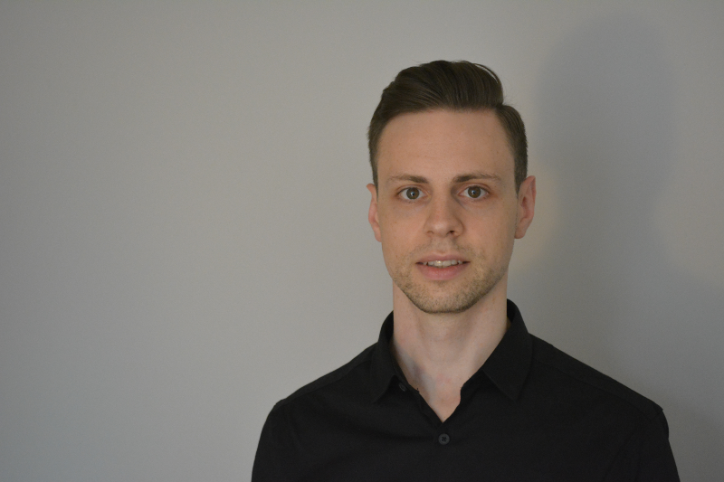

-
-
10 Brock Street
London NW1 3FG, UK
Home

I am a Computer Animation Specialist currently working as a Software Engineer at Meta Reality Labs. My work and research interests revolve around character animation and full-body locomotion, secondary-motion, physics-based animation, animation systems and geometry processing. Prior I was a post-doctoral researcher at the Smart Geometry Processing Group at University College London, UK. I received my PhD from RWTH Aachen University where I was a member of the Animation Group at the Visual Computing Institute. Further, I received my MSc degree in Computational Engineering from TU Darmstadt, Germany.